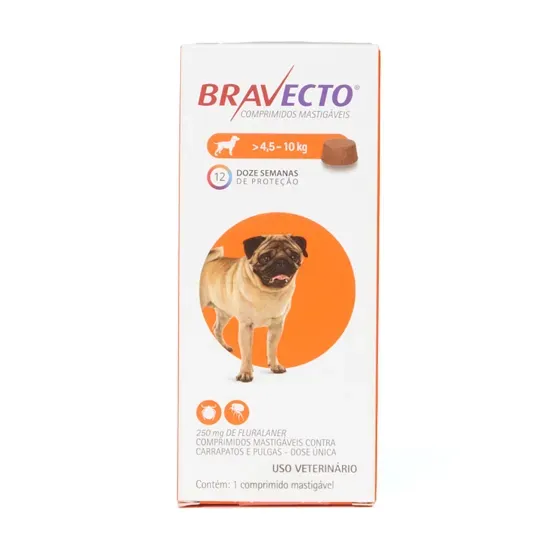

Antipulgas e Carrapatos Bravecto 45 a 10 kg sem sombra
Ver descrição do produto
Bravecto é um antipulgas e carrapatos desenvolvido para cães, oferecendo proteção contra esses parasitas e contribuindo para a saúde e o bem-estar do animal.
- Indicação: cães de 4,5 a 10 kg
- Categoria: antipulgas e carrapatos
- Animal: cães
- Proteção: contra pulgas e carrapatos
- Apresentação: comprimido mastigável